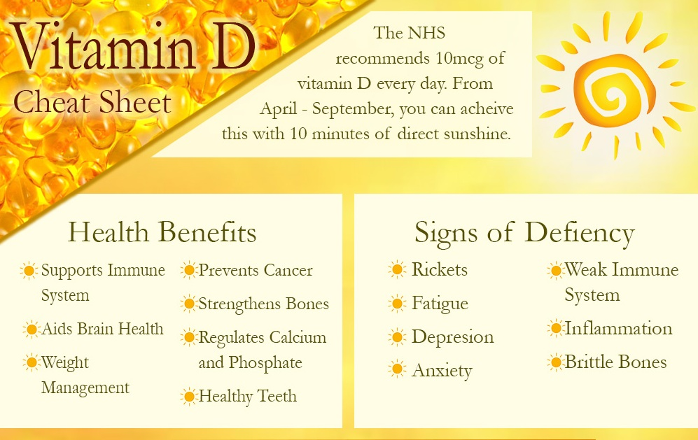

Multiple Independent Experiments say “YES”... Thousands of former Arthritis
sufferers have gotten breakthroughs from it…
Read on to find out What it is and How to get it
From:
Dr. Akin Olaoye. Lagos, Nigeria.
Dear friend,
I hope you’re in the mood to discover something exciting today.
I didn’t believe it was possible until I tried it on Nigerians too.
If you suffer from swollen and painful joints all around your body, you’ve
probably tried the several options out there without great results.
Those remedies you’ve tried might have helped you relieve your joint pains and
inflammations a bit but…
Those remedies you’ve tried might have helped you relieve your joint pains and
inflammations a bit but…
That’s why I’m excited to tell you about this Indian religious perfume that
eases pains almost immediately…
Fixes troubled bone structures and brings about...
Total Recovery From Arthritis in Just 90 DAYS!
Even if you’ve been suffering from severe joint pains for as long as 33 years
and every other thing you tried has failed…
It also doesn’t matter what caused your pains (injuries, aging, accident, etc)
- So, What's special about this Volatile Oil?
It’s in the way it helps people recover from long-term joint pains.
Like the balms and pain reliefs, this plant helps you to relieve joint pains,
inflammation and rebuild healthy cartilage...
But unlike the others, it brings about total recovery from severe joint pains
and every kind of arthritis in as little as 3 months.
Imagine finally being able to sleep well at night after numerous interrupted
nights of soul-crushing pains…
Imagine finally being able to sleep well at night after numerous interrupted
nights of soul-crushing pains…
How would it positively affect your job?
How much time will free and unpainful body parts allow you to spend with your
family?
What would it mean if you could finally give up on all those dangerous pain
relief drugs giving you horrible side effects?
All this is very possible again once you have your free joints again.
Before I go on to tell you what this Volatile Oil is…
It’s important that I show you a few people who have experienced complete
freedom from joint pains, back pains, etc with this nutrient.
Mrs. Oladimeji
"Over the years, I’ve tried many different kinds of products to heal and take
away the pain, but never got the results I was looking for.
Before Advanced Joint Support, it was very difficult to walk. Going up and down
stairs became almost impossible.
However, after dutifully following this method for two to three weeks…
I noticed less pain and the ability to get around much easier.
The doctor’s x-rays showed a little improvement with the growth of new
cartilage.
After 2 and a half months of consistently following your advice…
I’m completely FREE! Thank you for giving me back my life
Retired Soldier, Lieutenant Danjuma's Son
“My dad’s injuries from while he was still in the army came back…
He had been injured in both knees while he was still actively serving and that
caused his Osteoarthritis…
He said he had a lot of pains in his knees, hip and back. He couldn’t walk
without support…
When I heard about this natural oil plant thing from a friend…
I tried it on him and now…
His pains have vanished after only 3 months of consistent use.
Thank you for this!
What’s More About this Volatile Oil and Nutrient?
Traditional studies suggest that because of how much elephants enjoy eating this
Indian plant...
It’s probably why elephants are unusually strong and powerful animals.
This
Volatile Oil
causes your body to provide all the essential collagens needed to
Regrow new bone tissues…
Restore fluids that cushion joints thereby promoting flexibility and mobility
Strengthen the bones and…
Eliminate all kinds of pains in the body.
What is this Indian plant?
It’s a natural herb growing at a growing extinction rate in the trenches of
India, the Middle East, and some parts of the African continent.
The extract of this plant is called Frankincense which is used in making
fragrances for perfumes and other cosmetic products.
This plant is known as
BOSWELLIA
pronounced as
BOS-WE-LIA.
Researchers have proven for years that
BOSWELLIA
has an extract that’s a
powerful anti inflammatory substance and eases all kinds of pains pretty fast.
Could Boswellia Help Eliminate The Pains and Swelling in Your Joints?
Don’t take my word for it...
One 2003 study published in the journal Phyto medicine found that all 30 people
with Osteoarthritis knee pain who received Boswellia reported a great decrease
in knee pain.
They also reported an increase in knee flexion and how far they could walk.
Another study, funded by a Boswellia production company, found that increasing
the dosage of enriched Boswellia extract led to an increase in physical ability.
Osteoarthritis knee pain decreased after 90 days with the Boswellia product,
compared to a lesser dosage and placebo.
It also helped reduce the levels of a cartilage-degrading enzyme.
An older study published in the Journal of Rheumatology found that Boswellia
helps to reduce Rheumatoid Arthritis joint swelling.
Some research suggests that Boswellia may interfere with the autoimmune process,
which would make it an effective therapy for Rheumatoid Arthritis.
So far,
more than 16 different and independent experiments have proven that Boswellia
helps beat arthritis.
In fact, doctors around the world are now prescribing an increase in the
consumption of Boswellia to patients with mild to severe cases of arthritis for
an improvement in mobility and grip.
Imagine the possibility for you when your painful and stiff joints are no longer
a problem…
The ability to walk for miles without having any pains…
Your ability to do your duties with energy…
Not waking up to those joint pains again…
Better bedroom performance in the “upper” room…
irm grips and loose joints to enjoy quality moments with your family.
In just a moment, I’ll tell you about how
Boswellia helps rebuild new cartilages and strengthen your bones…
Why you haven’t had great success with the several supplements, workout
programs, and diet programs you’re using at the moment to combat the pains…
The real reason behind inflamed, stiff, and painful joints...
You’ll also see how one tiny herbal company in India combined a few other
effective herbs that
reduced the lifespan of Arthritis to 3 months after you
start using their solution.
This means once you start using this herbal-based formula…
you can very well give yourself a 3-month window to…
TOTALLY RECOVER FROM ARTHRITIS
But first, you’re probably wondering who I am and why I’m releasing this
information…
My name is Dr. Akin Olaoye.
I’m a medical doctor by profession and I’ve also witnessed several life-changing
breakthroughs in modern science.
I’ve been regarded as
‘the Pain Doctor’
because of how the former treatments I have recommended helped people with pains
from accidents, stress, and the likes.
But, never in my career, have I seen anything more effective than the
combination of nutrients I’ll be telling you about today.
I’ve forever been disturbed by the side effects of the popular joint pain relief
drugs on the market today.
Side Effects and Complications like…
- Peptic ulcer…
- Diarrhea…
- Acute kidney failure…
- And Hypertension among others.
- You’re probably asking yourself…
You’re probably asking yourself…
What Causes Those Stiff, Painful, and Swollen Joints?
First, arthritis is not one disease.
There are over 100 different kinds of arthritis with various causes.
Rheumatoid Arthritis is caused by what is known as an Auto-immune condition
which means the body’s immune system is attacking the tissues of the joints.
There’s Osteoarthritis that occurs when the cartilage that cushions the bones
from grinding on one another starts getting destroyed…
Eventually, when the cartilage in the joint completely destroys, bones begin to
grind on bones which causes…
Inflamed, Stiff, and Painful Joints with Reduced Ability to Move and Perform
Normal Tasks.
One thing is common across all kinds of Arthritis…
There is a key inflammatory enzyme present that causes parts of the body to
swell and become painful.
It’s known as
5-lipoxygenase (5-LO).
5-LO generates something called inflammatory leukotrienes…
which cause inflammation by promoting free radical damage, calcium dislocation,
cell-adhesion, and migration of inflammation-producing cells to the inflamed
body area.
This means that once you have 5-LO under control…
Your Body Can Start Replacing Worn-out Cartilages and Strengthen The Bones
Again!
This is the aspect where all the regular joint pain relief drugs have failed.
If you've tried several other Arthritis pain relief products, you need to
understand that...
They focus on masking the pain and giving you temporary relief but…
They fail to tackle the underlying cause of the disease.
That’s why most people who tried them realized that the pain and swelling don’t
go away completely.
How Does This Indian Volatile Oil Made From Plant (BOSWELLIA) End Pain And Build
New Cartilage
Boswellia ,
also known as Indian frankincense, has been used for centuries in Indian
Ayurvedic medicine to maintain healthy joints.
And modern science shows that Boswellia works by increasing blood flow to the
joints, and by inhibiting the body’s production of inflammatory chemicals called
leukotrienes
That way 5-LO is placed under check and new cartilages are grown to support
mobility and help you live pain-free again.
A clinical trial conducted by Raychaudhuri and co-workers in India has shown
that the extract of the plant, Boswellia serrata, can reduce pain and
considerably improve knee-joint functions, in some cases providing relief even
within a few days.
Studies show that people taking
Boswellia reduced their joint swelling and morning stiffness
while increasing mobility and grip strength.
That’s why I had my doubt lowered when I saw the Joint restoration formula this
Indian company had manufactured.
It simply doesn’t relieve pain and reduce inflammation…
They named it
Boscure
and
Boniac Bone
Support Formula.
It sends Arthritis away completely in as little as 3 months.
If all they put into this formula was only quality Boswellia…
It’d be more than worth it to pay a premium price for how effective it is in
handling joints pains...
But they went further and added a few proven and patented natural ingredients to
make them very powerful.
They added…
Tetrahydrocurcumin: This is a derivative of Curcumin, a bright yellow chemical
produced by plants of the Curcuma longa species.
A 2010 clinical trial found that a Terathydrocurcumin supplement provided
long-term improvement in pain and function in 100 patients with knee
OsteoArthritis.
If you compare how effective the patient's body is at absorbing curcumin versus
tetrahydrocurcumin, the tetrahydrocurcumin is 3.5 to 4 times as effective as the
curcumin used in most arthritis pain relief drugs
Cissus quadrangularis - The Devil’s backbone
Cissus quadrangularis is a plant that has been revered for its medicinal
properties for thousands of years.
Historically, it has been used to treat many conditions, including hemorrhoids,
gout, asthma, and allergies.
However, recent research has found that this power-packed plant may also help
promote bone health, relieve joint pain, and protect against chronic conditions
like heart disease, diabetes, and stroke.
One 8-week study in 29 men with chronic joint pain found that taking 3,200 mg of
Cissus quadrangularis daily significantly reduced exercise-induced joint pain.
Similarly, a 3-month study in 60 people showed that taking 1,200 mg of Cissus
quadrangularis daily promoted fracture healing and increased levels of a
specific protein required for bone formation.
Cissus quadrangularis also helps reduce Bone Loss, Speed the Healing of
Fractures, and Help prevent conditions like Osteoporosis.
In fact, an 11-week study found that feeding Cissus quadrangularis to mice with
Osteoporosis
helped Prevent Bone Loss
by altering levels of certain proteins involved in bone metabolism.
N-Acetyl Glucosamine
This nutrient-enhanced cartilage recovery and repair of the joints also benefits
other organ systems and prevents diseases such as stroke and other heart
diseases.
NAG reduce pain and enhances knee function:
- Stopped cartilage destruction.
- Bboosted collagen production.
- Relieve joint inflammation.
One of the largest research efforts, called the Glucosamine/Chondroitin
Arthritis
Intervention (GAIT) involved nearly 1,600 patients with painful bones revealed
that NAG relieves pain and restores bone formation in a matter of weeks.
Boniac and Boscure
Do you see how powerful Boniac and Boscure are with these natural ingredients?
They didn't stop with these. They still included…
Vitamin D3 (Cholecalciferol)

Vitamin D is best known as a
“bone-health hero”
, helping the body absorb calcium and phosphate to keep bones strong.
If you don’t have enough, your bones can become soft and weak.
A renowned medical website (keckmedicine.org) published research that proved
that Upping your
vitamin D
intake has been shown to help with symptoms of rheumatoid
arthritis.
When I saw all these ingredients I just shared with you on their label…
I had little doubt because…
Many Drug Companies Lie About The Content of Their Formula.
They either do not add enough quantity required to get the job done…
Or do not even add those stuff at all.
I decided to order some bottles for some of my own patients to see how it would
work.
Mrs. Faith Abegunde BUSINESS WOMAN (Lagos)
Am 53 years and suffered from Arthritis for more than 12 years. I had tried
several trado-medical options (local methods) and orthodox ones.
I even gave up looking for solutions and hoped for a quicker departure from
life.
I have her 3-month bottle of Boscure and Boniac to see if they'd be any
different.
I got instant relief the moment I rubbed Boniac (the ointment) on my swollen
left hand.
Every time I experiences pain…
I gently massaged Boniac on the surface and it does the magic.
On her third month of consistently using Boscure 1 capsule twice a day…
I got my total recovery from Osteoarthritis.
Am back and even more active in my cloth trading business…
I can easily travel around Nigeria to source for quality clothes to sell…
And my husband enjoyed my activeness in the bedroom again!
I didn't only try Boscure and Boniac, I tried out product before coming across
this product and am very glad I got the three months plan and it worked for me,
" I had suffered from Rheumatoid Arthritis for about 7 years before I came in
contact with this 2 in 1 Combo My joints especially my lower back and knees used
to be as if there was a fire in them. The pains were sharp and I could not run
my business as I used to. But after just 2 and a half months of using this 2 in
1 combo, I could not believe it. All my joints are now strong as ever! "
I’ve
tried lotions, creams, and every kind of pill. The only relief I got is with
Boscure and Boniac.” I got about 50 testimonials from my patients and those of
my colleagues about Boniac and Boscure… They all said Boscure and Boniac…
Mr. Callsitus Onyema Federal Ministry of Labour Rivers State
Mr. Callsitus Onyema
Here's what Mr. Callsitus Onyema said after using this same formula…
I had suffered from Rheumatoid Arthritis for about 7 years before I came in
contact with this 2 in 1 Combo.
My joints especially my lower back and knees used to be as if there was a fire
in them.
The pains were sharp and I could not run my business as I used to.
But after just 2 and a half months of using this 2 in 1 combo, I could not
believe it.
All my joints are now strong as ever!
ALL THOSE WHO HAVE USED THE VOLATILE OIL, HAS COME COME BACK WITH SOME MIND
BLOWING TO SAY ABOUT IT RANGING FROM IT ABILITIES TO...
Relieved Their Joint Pains…
Eliminated their Inflammations and…
Helped them start living their best lives again!
With these results…
I felt stabbed in the gut that there are thousands of Nigerians still suffering
from Joint Pains and Stiffness.
Forced to live through each day hoping for a quicker death…
Spending thousands (even hundreds of thousands) monthly to MANAGE their joint
pains…
And here I am at my job with something that could…
Fix Their Arthritis Once and for All in 3 Months!
This is why I pulled together a team of fearless doctors and reached out to this
small Indian company for a partnership deal.
We would help them get their products in the hands of as many as possible
Nigerians with severe cases of Arthritis, back and joint pains.
Since we started getting this formula in the hands of desperate Nigerians… We
have received countless Testimonials...
The Lowest Price We've Ever Charged
The first two shipments we brought in before the lockdown was sold at #57,500
for a month's supply.
And we sold out both shipments within 3 days.
But right now, we're doing a price test and have slashed the price greatly…
And because we've been able to order more quantities...
You won't pay anything near that for it today.
Before I tell you how much you'll invest to get Boscure and Boniac Ultimate Bone
Support Formula…
Here's a quick maths.
How much are you currently spending to MANAGE arthritic pains monthly?
I know people spending about ₦35,000 a month.
Let's be conservative and assume you're spending just ₦20,000 every month. By
the end of a full year…
You would have spent a full ₦240,000
managing the disease. In 5 years, you'd have spent ₦1,200,000…
And in 10 years, you would have flushed ₦2.4m down the rabbit hole.
Is it worth it?
Boscure and Boniac Ultimate Bone Support Formula might be expensive in the short
term but the long-term reward is gigantic.
Only while this shipment lasts…
You can get a month's supply of Boniac and Boscure for just…
₦39,500 (a healthy from the regular price).
You can get the more advised and economical two months' supply for only…
₦49,500 ( saving you ₦40,500 from the normal price)
Most of the people who order Boscure and Boniac go for the 3 months' supply…
Because they also
get a very powerful Stress relief product worth N20,500 for FREE.
This formula is known as
Ashwagandha.
Allow me to explain what Ashwagandha does for you.
Ashwagandha has been in existence as a natural herb in India for over 5,000
years.
It has been proven in countless scientific research to…
- Regulate blood sugar levels
- Help people sleep well through the night after a stressful day
- Have anti-cancer properties
- Reduce stress and anxiety
- Boosts testosterone and fertility in men
- Reduce inflammation in body parts.
When I was actively selling Ashwagandha, a month's supply costs #20,500 and
people were happy to pay because of what it does for them.
However, I'll give it to you for FREE…
when you order a full 3 months' supply of Boscure and Boniac Ultimate Bone
Support Formula.
That means you'll get 3 bottles of Boscure…
3 tubes of Boniav…
And 1 bottle of Ashwagandha that normally would cost…
#110,500 for only…
EVERYDAY WE GET FEED BACK SUCH AS BELOW FROM THOSE WHO ARE USING OUR PRODUCT,
AND WE ARE LOOKING FORWARD TO GET YOURS TOO...
ORDER NOW
Get A Discount
And here is our…
Down To The Last Pill Guarantee
How Long will it take to be delivered?
We know how powerful Boscure and Boniac Ultimate Bone Support Formula is and we
stand by this amazing product.
That’s why we’re putting our money where our mouth is — with an unconditional
100% money-back guarantee.
You risk nothing.
Simply try Boscure and Boniac Ultimate Bone Support and if…
you don’t agree that your joint pains have completely disappeared with 90 days
(3 months)...
Simply send back the empty bottle and we’ll refund you every penny you paid,
without delay. We can’t think of a better way to convince you to try the most
amazing breakthrough in joint pain ever.
You’ll be glad you did.
We do not guarantee that this formula will always be available.
Due to the current restrictions on importation, it's getting harder to bring in
Boscure and Boniac Ultimate Bone Support.
You might come back to this page next month and find out that this entire
shipment is…
Or the price has greatly increased, BECAUSE THIS PAGE IS UP FOR A LIMITED TIME
you missed out
Do not hesitate to take up the 3-month pack if you have the capacity.
Remember...
Your pains may return if you don't complete the 3 months 'consistent usage.
That's why most people take our advice and order for 3 months' supply (the
estimated time for complete healing of arthritis.) You should try it to avoid
disappointment too.
If the pains show up again after a full 3 months…
We'll issue you a complete refund of your money.
It's as simple as that.
Full instructions on how to use it will come with your order.
To make this as risk-free as humanly possible…
We run
a pay on delivery model
You don't pay anything until you have received your order.
And Boscure and Boniac is made available in every state in Nigeria on a FREE
shipping basis.
A deal can't get any juicier than this.
My friend,
You have just read to yourself what most people never found out about fixing
joint pains… That made them permanently tied to a wheelchair or stroke…
Some even to an early grave.
The few people who are managing the disease are spending a fortune treating the
symptoms while their condition is worsening.
Where will you be 3 months (90 days) from today?
Will you be happy you took the risk-free action to give Boniac and Boscure a
trial and you're now free from Arthritis?
Or you'd be somewhere still managing the disease, spending a lot, and missing
valuable moments with your family?
The decision is yours and…
I wish you the best of luck.
Warm Regards,
Dr. Akin Owolabi
PS: Can I ask you a small favor?
Once you try
Boscure and Boniac Ultimate Bone Support Formula
and see how great it works for you…
I’d appreciate it if you could
send me a brief
note telling me about your results. I hope you'll remember.
P.P.S:
There's no need to mention any brand that makes your condition worse. You've
seen them for yourself.
If they were truly working, you wouldn't be reading this letter today.
Take Action Today And Order
Most Asked Questions
What's the difference between Boscure and Boniac?
Boniac is the cream in the tube. It was made to provide instant relief from the
horrible pains, unstiffen the joints and ease the swollen joints.
Boscure is the real formula that does the job of battling the enzymes causing
inflammation. It helps your body regrow new, healthy, and active cartilages
again.
It also strengthens the bone and thereby increases your mobility and…
How long will it take to see results?
You'll notice a great reduction in the pains almost immediately after rubbing
Boniac in the affected joints.
Past customers reported that they got total recovery from joint pains in their
third month of consistently using Boscure.
3 months, the pains, swollen and stiff joints are gone forever!
How long will it take to receive my order?
We ship every order almost immediately after the verification of your address
and your order size.
You can expect to receive your supply of Boscure and Boniac Ultimate Bone
Support Formula in
3-5 business days.
Do I have to pay before receiving my order?
NO! To make this as risk-free as possible…
You only pay upon the receipt of your order at your chosen delivery point.
Why do you advise the 3-month plan?
We often advise that people take the three months' pack for three reasons…
First,
it's getting harder to bring in Boscure and Boniac from India where they are
manufactured due to COVID reasons…
We can't assure you that you'll still be able to get another pack the next time
you try to order. People are taking up the 3 months' plan pretty fast.
Secondly
, the 3-month pack comes with a bonus not available on the other plans.
Because of how much we're able to save on shipping 3 months pack together…
We decided to pass on the relief to you by adding another product we once sold
for N20,500.
Ashwagandha
will help you sleep better at night, regulate your blood sugar, reduce your risk
of cancer, and other good stuff.
Lastly,
it's more economical (a huge saving of about N60,000).
Can I order for someone (my parents) in another state?
Definitely. Fill in the address of the person you're buying for.
Put your phone number.
We'll get the contact details of the other person from you during the call.
What's the guarantee in your product?
We guarantee instant pain relief following the application of Boniac on the
swollen joints…
We however do not guarantee that you'll be totally free from joint pains until
you've consistently used Boscure for a full 90 days.
If after a full 90 days of consistently using Boscure the pain, swelling and
stiffness are not completely gone…
We'll issue you a full 100% refund of your money.


Comments
-Mr. Augutus Enugu
“I was using another natural product and had success. However, I liked the extra ingredient in your formula and am not disappointed. God bless!”
-David Farotimi Ibadan
“I was using another natural product and had success. However, I liked the extra ingredient in your formula and am not disappointed. God bless!”
--Mr. Akinkunmi Oladimeji Ogun
“Before I started using Advanced Joint Support my knees were very painful when I got up in the morning and when walking. Since I started taking Advanced Joint Support I have noticed fewer knee pain and greater mobility as well as more flexibility in my knees.”
-Mrs. Faith Abel Umar Ibadan
“I had pain in my knee joint that made it difficult getting to sleep. Also, my right knee hurt with every step. The pain is much less now. It’s easier to sleep too.”
-David Farotimi Ibadan
“I have NO stiffness now. Almost as good as before my accident. Thanks!!"
-Joseph Matthew Osun
I have tried several joint formulas over the years, but Advanced Joint Support seems to work the best.”
-Iman Gambo Maiduguri
“I used to wake up in the middle of the night with my hips hurting. Boniac and Boscure have eliminated my hip pain. I also have increased mobility."
Now, I'm inviting you to try out Boscure and Boniac Ultimate Bone Support Formula for…